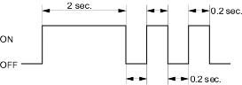

- From Mode 1, disconnect the special tool from the multiplex control inspection connector for about 10 seconds, then reconnect it. The spotlight and ceiling light should come on for 2 seconds, then blink twice more at 0.2 seconds intervals. This means the system has gone from Mode 1 to Mode 2.
MODE 2:

NOTE: To cancel mode 2, disconnect the SCS service connector from the multiplex control inspection connector for more than 10 seconds or turn the ignition switch OFF.
- Look in the following table for the switches most closely related to the problem. While still in Mode 2, operate the switches and the control unit. If the circuit is OK, the spotlight and ceiling light should blink once. If the circuit is faulty, there will be no indication.
Does the spotlight and ceiling light blink?
YES – Go to step 12.
NO – Go to step 11.
In each table below is a list of circuits that can be checked in Mode 2.
|
Taillight relay
Windshield washer motor Windshield wiper motor (INT, Auto stop) Driver's door switch Front passenger's door switch Left rear door switch Right rear door switch Ignition key switch Trunk/Tailgate latch switch Parking brake switch Driver's door lock switch (LOCK/UNLOCK) Passenger's door lock switch (LOCK/UNLOCK) Driver's door key cylinder switch (LOCK/UNLOCK) Driver's door lock switch (LOCK/UNLOCK) Front passenger's door key cylinder switch (LOCK/UNLOCK) Driver's seat belt switch (UNLATCH) A/C switch (with fan switch ON) Combination light switch Keyless signal line ECM/PCM communication line Gauge assembly communication line ABS communication Front fog light switch Tailgate key cylinder switch (LOCK/UNLOCK) (5 - door) |
- Check two or three other circuits listed above.
Does the spotlight and ceiling light blink for each circuit?
YES – The additional circuits are OK. Repair the short or open in the circuit that failed the test in step 10. 
NO – Multiplex failed circuits can mean that the control unit has failed, but without triggering a DTC. Test a few more circuits. If they also fail, test the multiplex control unit inputs (see page 22-277). If all the input test are OK, substitute a known-good control unit, gauge assembly, or ECM/PCM, one at a time, then recheck. If the system works properly, the original control unit is faulty; replace it. If there is still a malfunction, substitute a known-good control unit for the next most likely faulty control unit, then recheck. If the system works properly, that control unit is faulty; replace it.